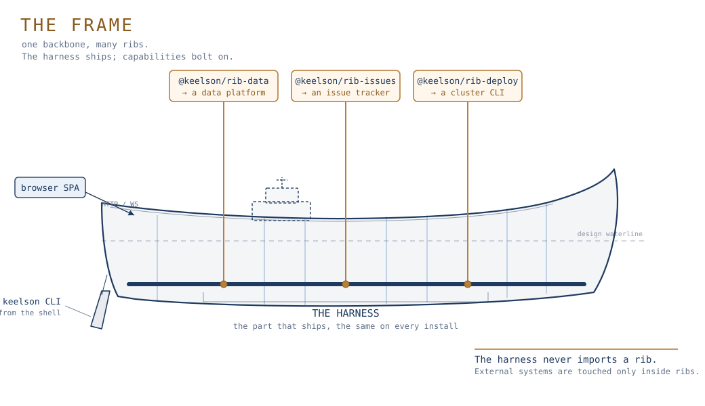

Chat
Talk to the agent with every rib tool on tap.
A local agent harness
Keelson is a single-user agent harness. It wraps a coding agent with persistent state, deterministic YAML workflows, and a typed extension contract. The harness is the keel, the part that ships, and it is useful on its own. Ribs are the capabilities you bolt on for more.
Apache 2.0 · Alpha · runs locally on Bun

Talk to the agent with every rib tool on tap.
Deterministic runs as readable YAML.
Persistent, searchable, and governed.
Capabilities ship as packages, not forks.
Ribs emit JSON; the app renders live boards.
Copilot or Claude, swappable. No lock-in.